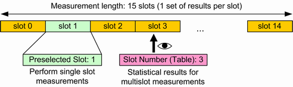

Defining the Scope of the Measurement
The WCDMA NodeB TX measurement is a multislot application: The R&S CMW measures 15 consecutive WCDMA slots (1 frame) in a single measurement cycle and stores the measurement results for each slot. The total number of slots per measurement cycle is termed the "Measurement Length" (slot no. 0 to 14).
Within this measurement interval, two individual slots are selected for a more detailed analysis:
- The "Preselected Slot" is used for single slot measurements, for example to measure
– The adjacent channel leakage power ratio (ACLR), – The spectrum emissions, – The code domain monitor results, – Single slot modulation measurements (vs. chip results), and – TX measurement. - For the multislot measurements, statistical results are measured for all slots (vs. slot results) and are displayed for one slot at a time, the "Slot Number (Table)". Statistical results are relevant in particular if the "Measurement Length" is measured repeatedly.

Preselected slot and slot number (table)
The ""Preselected Slot"" and the ""Slot Number (Table)"" are independent from each other.
See also: "Statistical Settings"